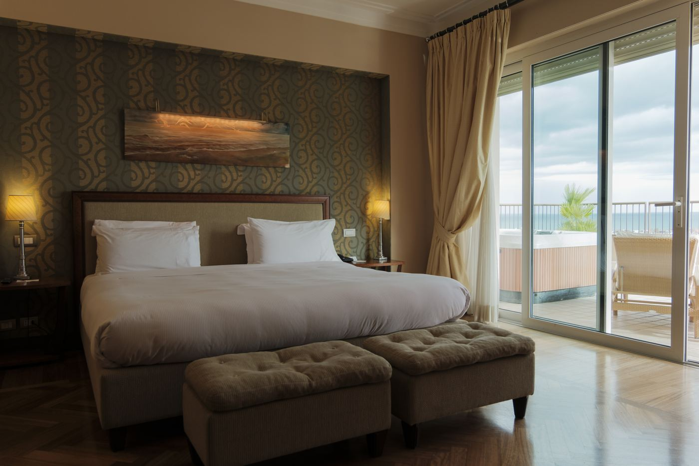
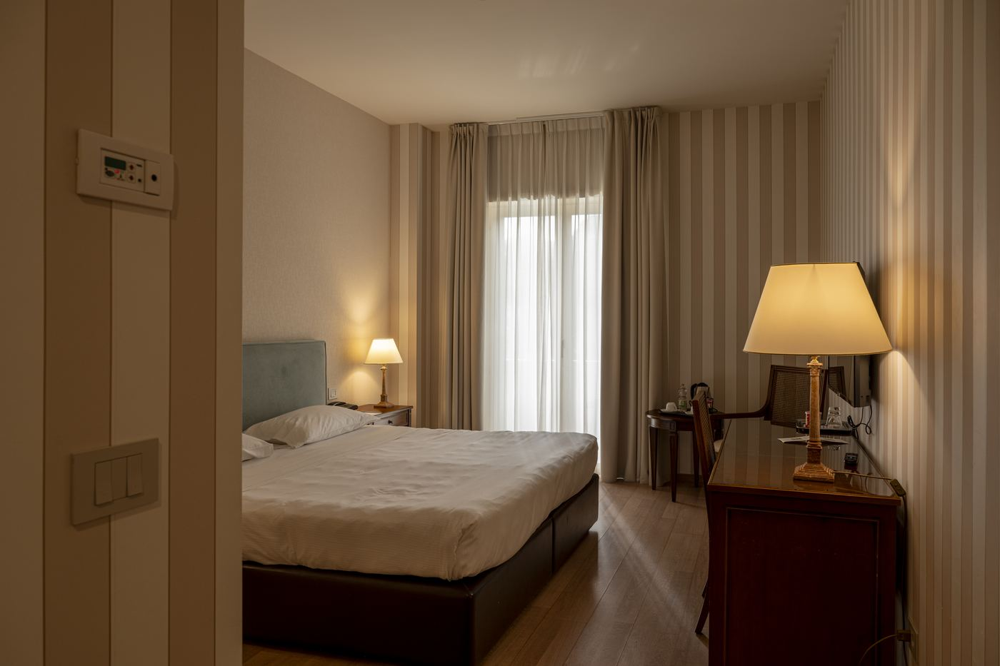
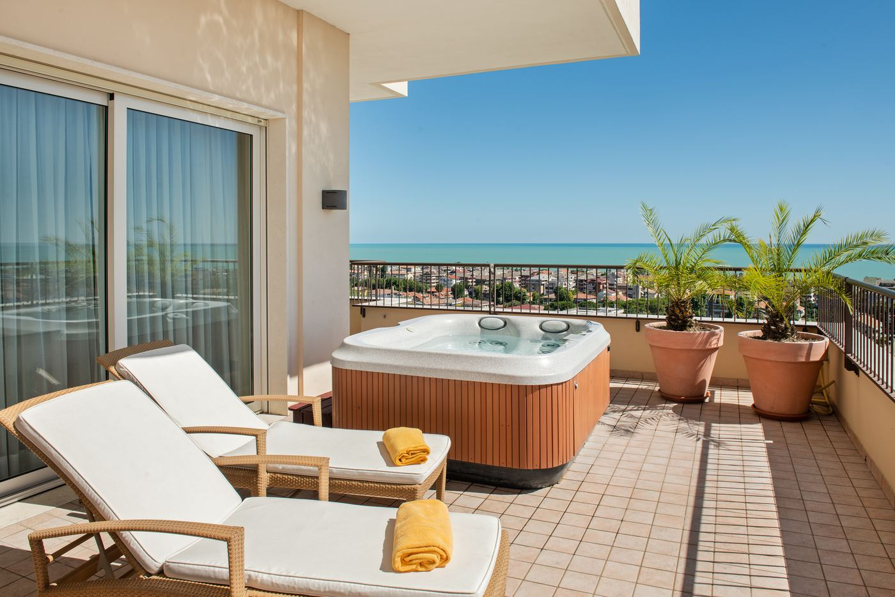

Camere e suite
Camere fatte per dormire bene.
Camere tranquille sulla collina, molte con vista sull'Adriatico.

Giardino o vista mare parziale
I prezzi cambiano con le date: il sistema di prenotazione mostra sempre la tariffa aggiornata.
Le nostre camere
Sei tipologie, parco o mare.
Villa Maria ha sei tipologie di camere, dalla Standard alla Master SPA Suite. Ogni camera guarda il parco o l’Adriatico ed è un posto tranquillo per dormire bene, con scrivania, prese vicino al letto e Wi-Fi ad alta velocità.
Camere Standard e Superior
Camere confortevoli con vista giardino o parziale vista mare e scrivania. La Camera Superior è ideale per una o due notti ed è la camera del Pacchetto Executive Business Stay.
Camere Deluxe
Più spazio, vista Adriatico, scrivania e zona lounge. La nostra scelta per soggiorni di tre notti o più.
Junior Suite
Una zona giorno separata e spazio in più, ideali per famiglie e soggiorni lunghi. Alcune si aprono su una terrazza con lettini e vista mare.
Master SPA Suite
La nostra camera più speciale: una terrazza privata con vasca idromassaggio e vista sull’Adriatico, per anniversari, viaggi di nozze o qualche giorno solo per te.
Famiglie e animali
Con lo Sconto Famiglia, camere e suite famiglia ospitano 2 adulti e 2 ragazzi, con colazione e spa incluse. Gli animali sono benvenuti con un supplemento. Dicci chi viene e ti suggeriamo la camera migliore.
Piccole attenzioni
Indicaci le tue preferenze una volta (cuscino, piano tranquillo, vicino o lontano dall’ascensore) e le terremo per il prossimo soggiorno. Un check-out posticipato si può spesso organizzare su richiesta.
Galleria
Guarda prima di arrivare.




Domande frequenti
Utile da sapere prima di partire.
Quale camera fa per me?
La Camera Superior, con vista giardino o parziale vista mare e scrivania, è ideale per 1–2 notti. Le Camere Deluxe e le Suite hanno più spazio e vista Adriatico, per 3 notti o più.
Quali sono gli orari di check-in e check-out?
Gli orari di check-in e check-out sono nella conferma di prenotazione. Se ti serve un check-in anticipato o un check-out posticipato, chiedicelo e faremo il possibile.
Sono ammessi animali?
Sì, gli animali sono benvenuti con un supplemento. Diccelo quando prenoti, così prepariamo la camera giusta.
C'è il parcheggio?
Sì. Il parcheggio privato è gratuito per gli ospiti e ha la ricarica per auto elettriche.
Qual è la politica di cancellazione?
Se prenoti il prossimo soggiorno durante la visita (10% di sconto), puoi cancellare gratis fino a 6 mesi prima dell'arrivo e cambiare date fino a 6 settimane prima. Per le altre prenotazioni, le condizioni sono nella conferma.
Pago quando invio la richiesta di prenotazione?
No. Scegli date, pacchetto e camera e ti rispondiamo via email con prezzo e conferma.